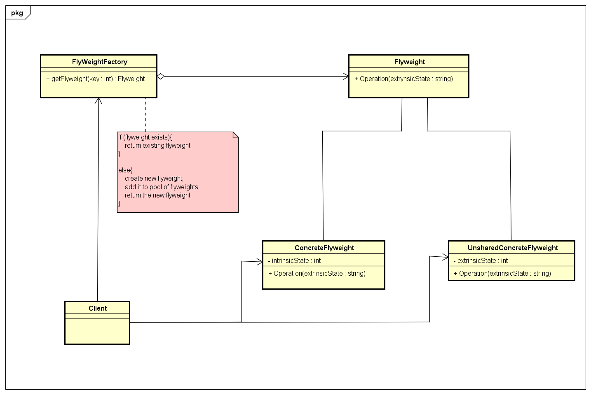

Flyweight
Descrição:
O padrão de projeto flyweight é um padrão estrutural utilizado quando existe a necessidade de se compartilhar uma grande quantidade de objetos idênticos de granularidade baixa para com baixo consumo de memória. No padrão flyweight a instância de um único objeto é compartilhada inúmeras vezes sem que haja a necessidade de se instanciar objetos de mesmos atributos um a um. Para a utilização do padrão flyweight é preciso compreender a diferença entre seus estados: -Estado Intrínseco: Envolve todos os métodos e atributos compartilhados e independente do contexto do objeto; -Estado Extrínseco: Envolve todos os métodos e atributos não compartilhados os quais são dependentes do contexto da aplicação. A estrutura básica do padrão flyewight é composta pelas seguintes classes: -Cliente: A classe cliente faz a requisição dos objetos compartilhados e é responsável por passar os estados extrínsecos; -FlyweightFactory: A classe que contém o array onde são armazenados os objetos flyweight e seus métodos de chamada; -Flyweight: A classe abstrata que contém os métodos de estado extrínseco; -ConcreteFlyweight: A classe que contém todo o estado intrínseco e a implementação dos métodos abstratos de estado extrínseco da classe Flyweight; -UnsharedConcreteFlyweight: A classe onde é armazenado todo o estado extrínseco do padrão.
Diagrama de Classes genérico do padrão:

Exemplo:
No exemplo do livro temos um software de landscape design no qual é preciso dispor vários objetos em diferentes locais do mapa, cada árvore possui uma idade e um par de coordenadas. Após utilizar o software por uma semana, o cliente informa que ao instanciar uma quantidade muito elevada de objetos árvore há uma queda de desempenho. A ideia apresentada para a solução desse problema está em criar uma classe manager que contenha um array responsável por armazenar todos os estados do objeto árvore e alterar a estrutura da classe árvore para um objeto sem estado, com um método responsável por gerar o desenho da árvore no landscape.